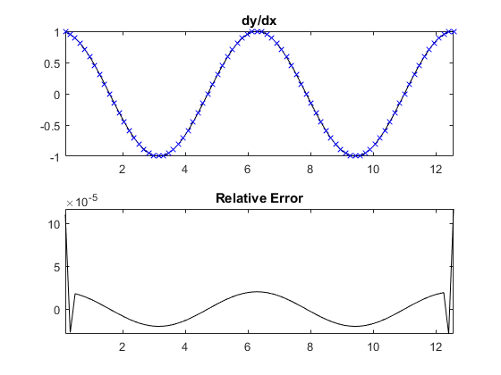

gradientFD
Calculate the gradient using a finite-difference method.
Syntax
fx = gradientFD(f, dx) fx = gradientFD(f, dx, [], deriv_order) fx = gradientFD(f, dx, [], deriv_order, accuracy_order) fn = gradientFD(f, dn, dim) fn = gradientFD(f, dn, dim, deriv_order, accuracy_order) [fx, fy] = gradientFD(f, dn) [fx, fy] = gradientFD(f, dn, [], deriv_order, accuracy_order) [fx, fy, fz, ...] = gradientFD(f, dn) [fx, fy, fz, ...] = gradientFD(f, dn, [], deriv_order, accuracy_order)
Description
gradientFD calculates the gradient of an n-dimensional input matrix using the finite-difference method. For one-dimensional inputs, the gradient is always computed along the non-singleton dimension. For higher dimensional inputs, the gradient for singleton dimensions is returned as 0. For elements in the centre of the grid, the gradient is computed using centered finite-differences. For elements on the edge of the grid, the gradient is computed using forward or backward finite-differences. The order of accuracy of the finite-difference approximation is controlled by accuracy_order (default = 2). The calculations are done using sparse multiplication, so the input matrix is always cast to double precision.
A 1D example:
% compute gradient of a 2 period sinusoid x = pi/20:pi/20:4*pi; y = sin(x); dydx_4th_ord = gradientFD(y, pi/20, [], 1, 4); % plot gradient and error compared to analytical solution subplot(2, 1, 1), plot(x, cos(x), 'k-', x, dydx_4th_ord, 'bx'); axis tight; title('dy/dx'); subplot(2, 1, 2), plot(x, cos(x) - dydx_4th_ord, 'k-'); axis tight; title('Relative Error');
Inputs
f |
matrix or vector to find the gradient of |
dn |
array of values for the grid point spacing in each dimension. If a value for dim is given, dn is the spacing in dimension dim. |
Optional Inputs
dim |
optional input to specify a single dimension over which to compute the gradient for n-dimension input functions |
deriv_order |
order of the derivative to compute, e.g., use 1 to compute df/dx, 2 to compute df^2/dx^2, etc. (default = 1) |
accuracy_order |
order of accuracy for the finite difference coefficients. Because centered differences are used, this must be set to an integer multiple of 2 (default = 2) |
Outputs
fx, fy, ... |
gradient in the each dimension, where x corresponds to dim = 1, y corresponds to dim = 2 etc. |
See Also
getFDMatrix, gradient, gradientSpect